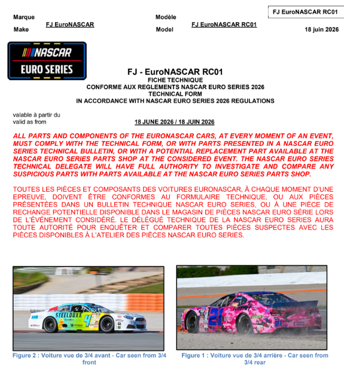
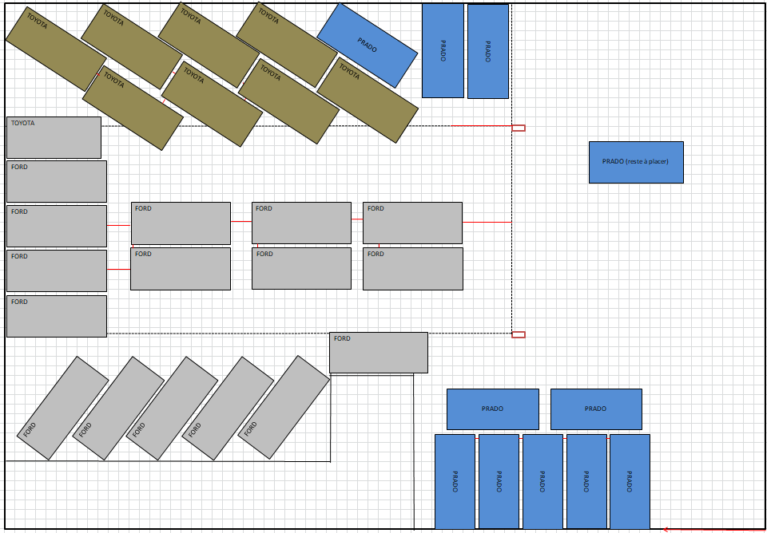

ADMINISTRATION TECHNIQUE
Contexte de la réalisation
- Stage de 11 semaines chez Team FJ puis alternance pendant un an. Dans le cadre de ma deuxième année de BUT GMP à l’IUT d’Orléans, j'ai pu faire un stage au sein de cette entreprise qui m'a ensuite gardé pour pouvoir y faire mon alternance.
- Découverte du fonctionnement d’une entreprise spécialisée dans le sport automobile de compétition.
- Participation aux contrôles de conformité des voitures NASCAR Euro Series.
- Contribution à l’amélioration des documents techniques et des procédures de contrôle.
Missions
- Aller aux meetings NASCAR afin de participer aux inspections techniques des voitures NASCAR.
- Mettre à jour la fiche d’homologation des véhicules.
- Créer et améliorer des fichiers Excel de suivi.
- Concevoir des formulaires pour recueillir les données techniques que cela soit pour les pilotes et les voitures.
- Préparer les dossiers d’inspection des véhicules.
- Rédiger et mettre en forme les rapports d’inspection.
- Réaliser un plans d’implantation pour optimiser le stockage des véhicules spécialisé pour les organisateurs du DAKAR.
🎯 OBJECTIFS
- Améliorer la fiabilité des contrôles techniques.
- Simplifier les procédures de vérification des véhicules pour les commissaires techniques.
- Améliorer la gestion et le suivi des informations techniques.
- Concevoir des outils adaptés aux besoins des équipes techniques (Excel).
✏️ Réalisations
- Je réalise encore en alternance, certaines de ces réalisation. En effet, tout ce qui concernet les points NASCAR, je le fais pour chaque meeting NASCAR.
En revanche, pour des raisons de confidentialités, je ne dévoilerai que très peu d'images. - Actualisation d’une fiche d’homologation d'un peu plus de 100 pages. En mettant à jour des photographies et des valeurs de conformité dans ce document.
- Création de fichiers Excel avec des fonctions de recherche automatisées.
- Préparation de dossiers techniques pour les inspections.
- Participation aux contrôles techniques lors de compétitions, à Brands Hatch, au Castellet, à Vallelunga, à Most ou encore à Zolder.
- Réalisation de plans d’implantation pour le stockage de 36 véhicules du Dakar
- Amélioration de l’organisation des documents et des outils de suivi.


📖 Cahier des charges et contraintes
- Réaliser le travail rapidement et très bien. Qualité et respect des délais sont très important.
- Faire face aux imprévus et s'adapter rapidement. (Oubli de sa clé USB avec tous les documents, bug du logiciel...)
🪢 Lien avec les Ressources de BUT GMP
- Mécanique et conception : apprentissage et approfondissement des caractéristiques technique des véhicules
- Qualité et contrôle : vérification de la conformité selon les exigences technique (la fiche d'homologation) grâce à des outils de contrôles.
- Outils numérique : meilleur utilisation de Word et de Excel notamment
- Organisation industrielle : amélioration des méthodes de travail
- Logistique : Gestion des stocks ainsi que d'un espace de stockage pour l'entrepôt des voitures du DAKAR
- Communication : avec les teams managers, les mécaniciens, les commissaires technique en anglais
⭐ Compétences développées
- Autonomie
- Numérique
- Rédaction de documents professionels
- Organisation
- Travail en équipe
- Communication surtout en anglais
← Activités professionnelles